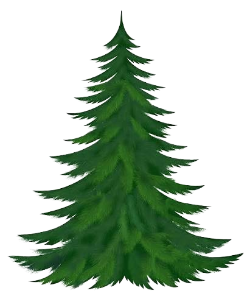

Virtual Terrarium

You have found your way into a deep corner of the jungle,
where normal expectations of nature have come to no longer apply.
Nestled between twisting spires of bark, sits a sizable glass structure,
encasing a unique and vast set of sized down forest denizens who have
found a way to perservere in there unusual circumstances.
Discover the ways in which these creatures have adapted to this
cramped but nevertheless cozy environment.